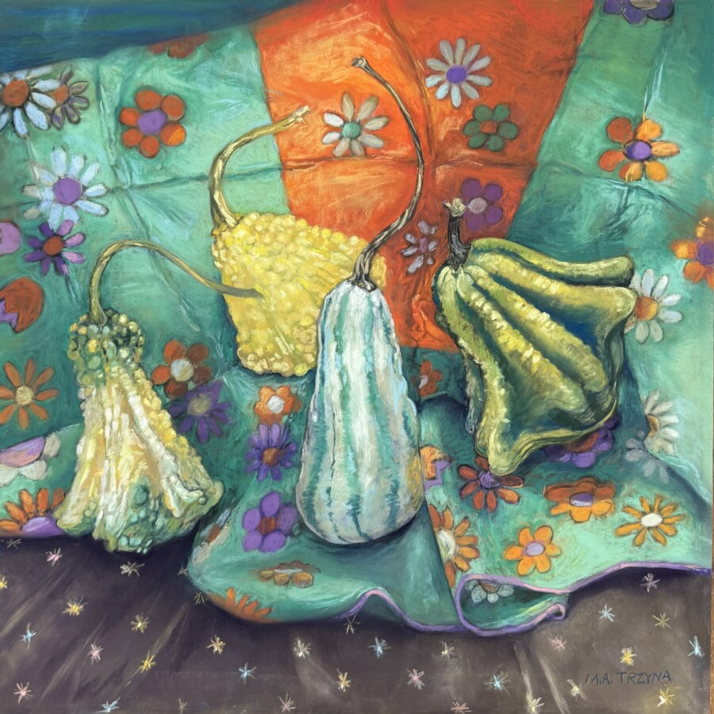

Mary Ann Trzyna: Earthly Delights
The Art & Design Department at South Suburban College is pleased to present Earthly Delights, an exhibition of pastel and oil paintings, linocut prints, and collages by Mary Ann Trzyna, on display now in the Dorothea Thiel Gallery through April 16, 2026.
Mary Ann Trzyna graduated from the University of Illinois Chicago with a degree in studio arts. She ran a graphic design business for over 20 years while also pursuing her personal work in the fine arts. In 2024, she closed the design business to pursue studio work full time. Since 2014, she has rented a studio at Union Street Gallery in Chicago Heights, a professional artists’ cooperative where she keeps regular studio hours and enjoys the frequent interaction with other artists.
Trzyna’s work explores form, color, and light, drawing inspiration from the natural world. Much of her work focuses on landscapes, trees, and gardens, created both en plein air and from sketches and photographs gathered during walks. Her still life paintings emphasize visual seduction through color and texture, often featuring organic forms with paired with with colorful, patterned fabrics.
More recently, Trzyna has incorporated relief printmaking into her studio practice. The prints explore line, composition, structure and color and require a different approach from her painting. Reflecting her experimental and playful approach in the studio, many of these prints are produced as variable open editions, with alteration made through hand coloring, collage, or both
Across all media, her work is about expresses a moment or mood through the visual play of color and form.
An artist reception will be held in the gallery on Tuesday, March 31, from 11 a.m. – 12:30 p.m.
The Dorothea Thiel Gallery is open Monday–Thursday, 9 a.m. – 4 p.m. The galleries are closed on weekends and holidays.
Image: